EventGround-WAM Final figures and qualitative evidence
Week 12 · Steps 2–3 · Existing audited evidence
Studies and panels remain separate. Formal means evaluation under a frozen protocol, not an untouched confirmatory test. All studies use one training seed. Selected examples illustrate behavior; they do not estimate its frequency.
Architecture schematic of the implemented controls. Week 9 and Week 11 are distinct studies. Auxiliary futures are training-only; coupled futures enter action refinement. The event branch changes the selected horizon, not the eight-action execution interval. PNG · SVG · PDF
Week 9 success rates and factorial effects with frozen 95% bootstrap intervals. Clean uncertainty resamples canonical tasks, retaining all 50 states. Affected comparisons remain descriptive; one training seed, development overlap and the JEPA research-use exception limit generalization. PNG · SVG · PDF
Formal three-arm comparison. The event-running fixed8 control matches fixed M4 binary outcomes; adaptive routing loses 32 targeted and 10 clean successes net. Paired intervals use the frozen resampling units. Clean includes zero; latency does not compensate for the failed performance gates. PNG · SVG · PDF
Revised-task development scores and the separately evaluated SFT continuation. The report comparison uses the existing source-bootstrap interval. Point scores on development do not establish superiority; old-task scores and robot outcomes are not pooled. PNG · SVG · PDF
Exploratory follow-ups retain their distinct controls and panels. Selected continuation counts and the incomplete adapter screen are not estimates of general benchmark performance. Fresh H8 effects use the supplementary whole-base-task bootstrap within suites; the frozen variant intervals remain in the tables. PNG · SVG · PDF
clean-200, ordinal 0030: adaptive only success. First manifest ordinal in this paired-outcome class. Rows show adaptive, event-running fixed8 and original fixed8. Columns show each trajectory’s first query, midpoint and last recorded pre-action observation; times differ across arms. Each image pairs front and wrist cameras. Outcomes come from the audited episode record; snapshots alone do not identify failure causes.Selection and provenance
first manifest ordinal in each paired outcome class; no quality selection
clean-200, ordinal 0156: both failure. First manifest ordinal in this paired-outcome class. Rows show adaptive, event-running fixed8 and original fixed8. Columns show each trajectory’s first query, midpoint and last recorded pre-action observation; times differ across arms. Each image pairs front and wrist cameras. Outcomes come from the audited episode record; snapshots alone do not identify failure causes.Selection and provenance
first manifest ordinal in each paired outcome class; no quality selection
clean-200, ordinal 0000: both success. First manifest ordinal in this paired-outcome class. Rows show adaptive, event-running fixed8 and original fixed8. Columns show each trajectory’s first query, midpoint and last recorded pre-action observation; times differ across arms. Each image pairs front and wrist cameras. Outcomes come from the audited episode record; snapshots alone do not identify failure causes.Selection and provenance
first manifest ordinal in each paired outcome class; no quality selection
clean-200, ordinal 0006: fixed only success. First manifest ordinal in this paired-outcome class. Rows show adaptive, event-running fixed8 and original fixed8. Columns show each trajectory’s first query, midpoint and last recorded pre-action observation; times differ across arms. Each image pairs front and wrist cameras. Outcomes come from the audited episode record; snapshots alone do not identify failure causes.Selection and provenance
first manifest ordinal in each paired outcome class; no quality selection
targeted-467, ordinal 0059: adaptive only success. First manifest ordinal in this paired-outcome class. Rows show adaptive, event-running fixed8 and original fixed8. Columns show each trajectory’s first query, midpoint and last recorded pre-action observation; times differ across arms. Each image pairs front and wrist cameras. Outcomes come from the audited episode record; snapshots alone do not identify failure causes.Selection and provenance
first manifest ordinal in each paired outcome class; no quality selection
targeted-467, ordinal 0000: both failure. First manifest ordinal in this paired-outcome class. Rows show adaptive, event-running fixed8 and original fixed8. Columns show each trajectory’s first query, midpoint and last recorded pre-action observation; times differ across arms. Each image pairs front and wrist cameras. Outcomes come from the audited episode record; snapshots alone do not identify failure causes.Selection and provenance
first manifest ordinal in each paired outcome class; no quality selection
targeted-467, ordinal 0017: both success. First manifest ordinal in this paired-outcome class. Rows show adaptive, event-running fixed8 and original fixed8. Columns show each trajectory’s first query, midpoint and last recorded pre-action observation; times differ across arms. Each image pairs front and wrist cameras. Outcomes come from the audited episode record; snapshots alone do not identify failure causes.Selection and provenance
first manifest ordinal in each paired outcome class; no quality selection
targeted-467, ordinal 0001: fixed only success. First manifest ordinal in this paired-outcome class. Rows show adaptive, event-running fixed8 and original fixed8. Columns show each trajectory’s first query, midpoint and last recorded pre-action observation; times differ across arms. Each image pairs front and wrist cameras. Outcomes come from the audited episode record; snapshots alone do not identify failure causes.Selection and provenance
first manifest ordinal in each paired outcome class; no quality selection
Bowl retention gain: both adapters retain the bowl and succeed, while fixed H8 loses it despite close commands. The H8-information control also reproduces the gain, so this does not isolate non-8 future information. Post-hoc, case-specific inspection; not a representative failure frequency.Selection and provenance
Post-hoc physical windows for review; no deployment gate or training targets.
Recovery regression: fixed H8 recovers a late pot grasp and succeeds. Neither adapter obtains bilateral pot contact; stove activation alone is insufficient. Post-hoc, case-specific inspection; not a representative failure frequency.Selection and provenance
Post-hoc physical windows for review; no deployment gate or training targets.
Wrong-fixture engagement: the motion adapter pulls the bottom drawer while the matched control opens the requested middle drawer. Gripper commands agree through their shared 181-frame span. Post-hoc, case-specific inspection; not a representative failure frequency.Selection and provenance
Post-hoc physical windows for review; no deployment gate or training targets.
contact predicted as grasp. Selected SFT continuation predicts grasp [4, 33]; automatic target is contact [16, 19]. Typed IoU 0.000. Intervals are relative to the anchor; endpoint 33 denotes the clipped window boundary. Future frames are retrospective display only. Automatic predicate agreement is not independent event truth or deployed-policy accuracy.Selection and provenance
One previously selected type-confusion case, one timing-error case and one correct-interval case; chosen after results, not representative.
docs/evaluation/week10-closeout-v1/examples.json
case-09
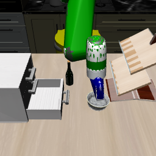
front · +0 · frame 93
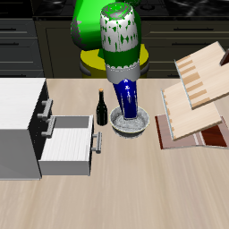
front · +16 · frame 109
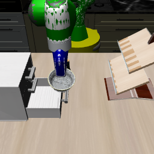
front · +32 · frame 125
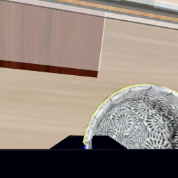
wrist · +0 · frame 93
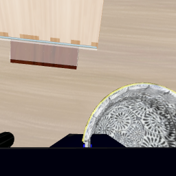
wrist · +16 · frame 109
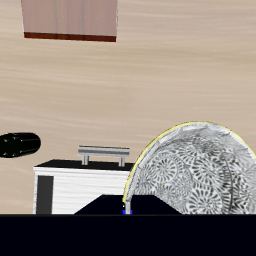
wrist · +32 · frame 125
large onset error with correct event type. Selected SFT continuation predicts grasp [4, 33]; automatic target is grasp [32, 33]. Typed IoU 0.034. Intervals are relative to the anchor; endpoint 33 denotes the clipped window boundary. Future frames are retrospective display only. Automatic predicate agreement is not independent event truth or deployed-policy accuracy.Selection and provenance
One previously selected type-confusion case, one timing-error case and one correct-interval case; chosen after results, not representative.
docs/evaluation/week10-closeout-v1/examples.json
case-13
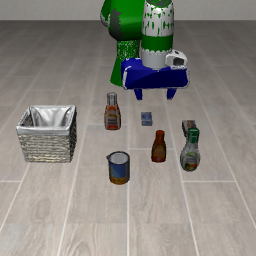
front · +0 · frame 22
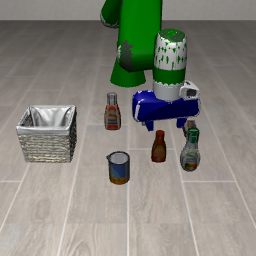
front · +16 · frame 38
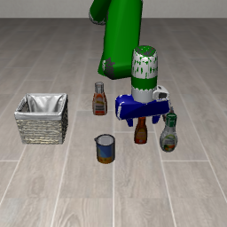
front · +32 · frame 54
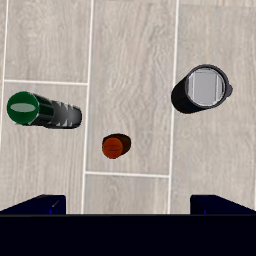
wrist · +0 · frame 22
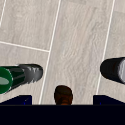
wrist · +16 · frame 38
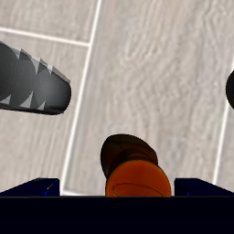
wrist · +32 · frame 54
correct event and interval example. Selected SFT continuation predicts contact [32, 33]; automatic target is contact [32, 33]. Typed IoU 1.000. Intervals are relative to the anchor; endpoint 33 denotes the clipped window boundary. Future frames are retrospective display only. Automatic predicate agreement is not independent event truth or deployed-policy accuracy.Selection and provenance
One previously selected type-confusion case, one timing-error case and one correct-interval case; chosen after results, not representative.